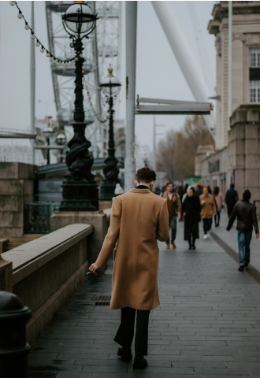
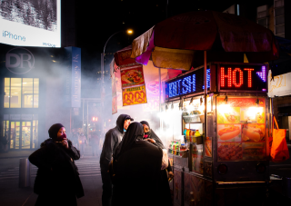
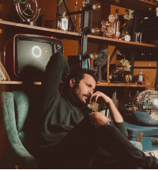
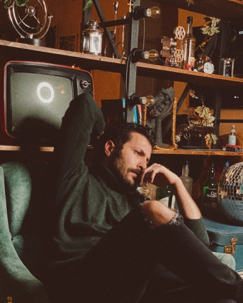
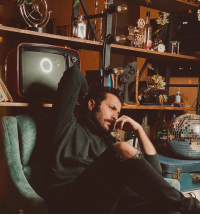
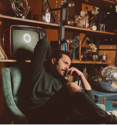

Like Impression, memories don't give second chance to RECAPTURE...
Legendary Gallaries
Gorgeous moments of my life and where my heart belong to

Photography is an art of teleporting the past to the future
Who am I
Since 1995, when I move to the US click the shutter become my best passion.I have travelled with camera on around the world to capture the beauty of people and the motifs of our mother nature . . .
Recent Work

Street Photography along the NY street definitely make my soul obecesses with the stunning emotion of its . . . !Definitely...
Follow Me On

Instagram @john_molly
Service
Vintage Photography

Portrait PhotoGraphy
This is Photography Porfolio website Desgined and Built by me which is also one of my first Big Project in Front-end Journey. Hope you enjoy it...
if you have any suggestion, please kindly send feedback to my E-mail
 
